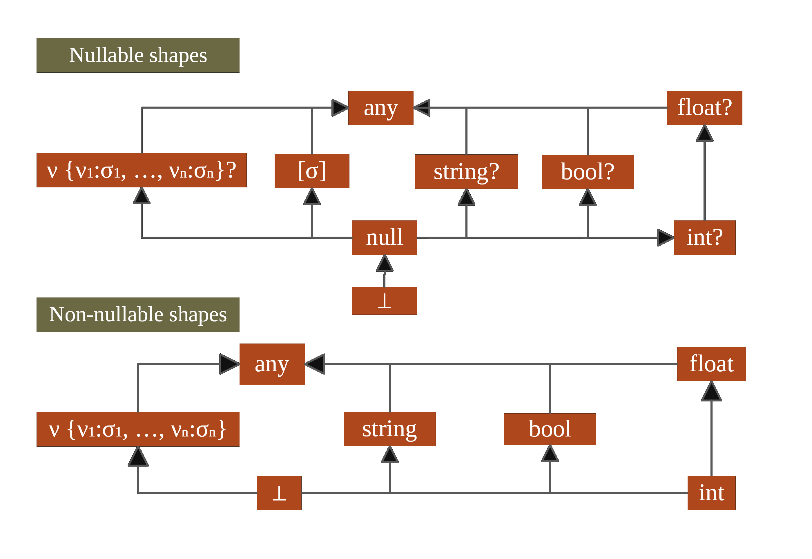

Types from data
Making structured data first-class citizens in F#
Tomas Petricek, University of Cambridge
tomas@tomasp.net | @tomaspetricek
Unsafe dynamic access
1: 2: 3: 4: 5: 6: 7: |
|
Unsafe dynamic access
1: 2: 3: 4: 5: 6: 7: |
|


Tedious handwritten mappings
1: 2: 3: 4: 5: 6: 7: 8: 9: 10: 11: 12: 13: 14: 15: |
|
Tedious handwritten mappings
1: 2: 3: 4: 5: 6: 7: 8: 9: 10: 11: 12: 13: 14: 15: |
|
DEMO
Reading news from RSS feed
{title : string, author : {age : int}} {author : {age : float}}
{ title : option<string>, author : {age : float} }
{ location : {lng:num, lat:num} } { location : string }
{ location : {lng:num, lat:num} } + { location : string }
DEMO
Getting weather via REST service
Behind the scenes
Structural shape inference
Language integration via type providers
Relative type safety
Relative type safety
Given representative samples and an input value
\(S(d')\sqsubset S(d_1, \ldots, d_n)\)
Any program written user type provider reduces
\(e_{user}[x\leftarrow e_{provided}(d')] \rightsquigarrow^* v\)
DEMO
Error handling and schema change
Schema change and stability
Inferred type can change only in limited ways
\(C[e] \rightarrow C[e.M]\)
\(C[e] \rightarrow C[{\sf match}~e~{\sf with}~\ldots]\)
\(C[e] \rightarrow C[int(e)]\)
Addressing practical concerns
- Prefer records for tooling support
- Predictable and stable shape inference
- Open world assumption about top shapes
Summary
Works in practice
(148k downloads, 1900 commits, 47 contributors)
Type safety revisited
Relative safety necessary for modern programs
Tomas Petricek, University of Cambridge
tomas@tomasp.net | @tomaspetricek
Bonus slides


Labelled top types
Fundamental open world assumption
1: 2: 3: 4: 5: 6: 7: |
|
Labelled top types
Top type annotated with possible cases
\({\sf any}\langle \sigma_1, \ldots, \sigma_n \rangle\)
Provides access to \(\sigma_1, \ldots, \sigma_n\)
Requires handling of unknown case